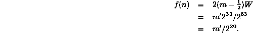

Data Structures and Algorithms
with Object-Oriented Design Patterns in Java
Data Structures and Algorithms
with Object-Oriented Design Patterns in JavaDealing with floating-point number involves only a little more work. In Java the floating-point data types are float and double. The size of a float is 32 bits and the size of a double is 64 bits.
We seek a function f which maps a floating-point value into a non-negative integer. One possibility is to simply reinterpret the bit pattern used to represent the floating point number as an integer. However, this is only possible when the size of the floating-point type does not exceed the size of int. This condition is satisfied only by the float type.
Another characteristic of floating-point numbers that must be dealt with is the extremely wide range of values which can be represented. For example, when using IEEE floating-point, the smallest double precision quantity that can be represented is and the largest is . Somehow we need to map values in this large domain into the range of an int.
Every non-zero floating-point quantity x can be written uniquely as
where , and . The quantity s is called the sign , m is called the mantissa or significant and e is called the exponent . This suggests the following definition for the function f:
where such that w is the word size of the machine.
This hashing method is best understood by considering the conditions under which a collision occurs between two distinct floating-point numbers x and y. Let and be the mantissas of x and y, respectively. The collision occurs when f(x)=f(y).
Thus, x and y collide if their mantissas differ by less than 1/2W. Notice that the sign of the number is not considered. Thus, x and -x collide Also, the exponent is not considered. Therefore, if x and y collide, then so too do x and for all permissible values of k.
Program  completes the definition of the Dbl wrapper class
introduced in Program .
The hashCode function shown computes the
hash function defined in Equation .
completes the definition of the Dbl wrapper class
introduced in Program .
The hashCode function shown computes the
hash function defined in Equation .
Program: Dbl class hashCode method.
This implementation makes use of the fact that in the
IEEE standard floating-point format
the least-significant 52 bits of a 64-bit floating-point number
represent the quantity .
Since an int is a 32-bit quantity,  ,
and we can rewrite Equation as follows:
,
and we can rewrite Equation as follows:

Thus, we can compute the hash function simply by shifting
the binary representation of the floating-point number
20 bits to the right as shown in Program .
Clearly the running time of the hashCode method is O(1).
 Copyright © 1998 by Bruno R. Preiss, P.Eng. All rights reserved.
Copyright © 1998 by Bruno R. Preiss, P.Eng. All rights reserved.